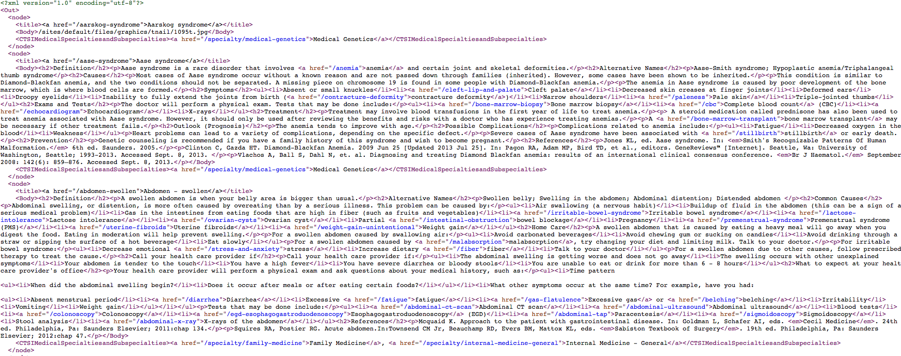
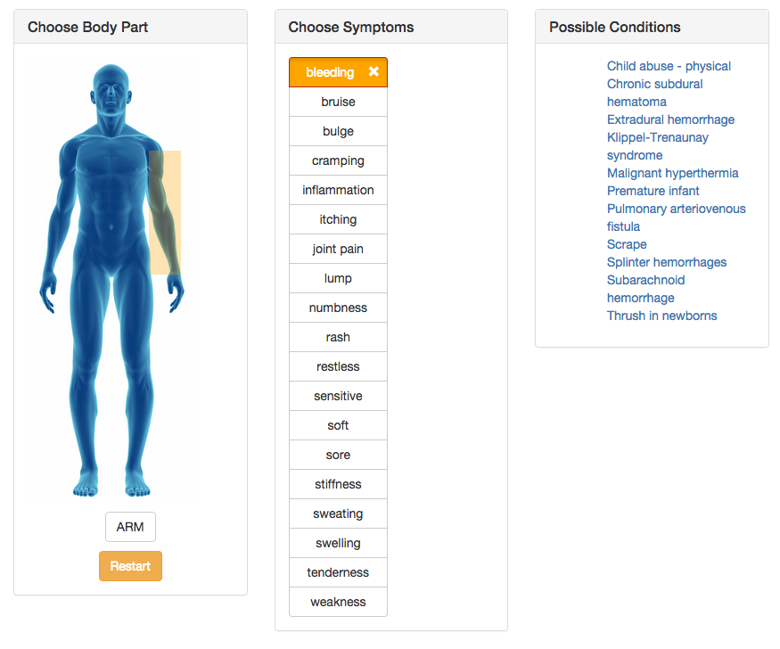

Resume
Career Objective
Seeking full time position as a Full Stack Developer
Education
University of Florida College of Fine Arts School of Music - Gainesville, FL. - Graduating 2016
Major
Music Interdisciplinary Program with Focus on Trombone Performance
Minors
- Computer Science
GPA 3.79
Work Experience
August 2015 - Present: UF Health Web Services
Intern PHP developer- Gainesville FL.
- Interning with UF Health web services as a PHP developer on their various PHP and wordpress projects through UFHealth.org
- Current work includes improving the functionality of an already existing Laravel Project and completely rebuilding an existing stand-alone PHP application.
- New skills learned include various PHP frameworks such as Laravel and CodeIgniter, AJAX, jQuery/javascript, and PHP web parsing.
May 2015 - Present: UF Cancer Genetic Research Complex
Student Assistant Python Developer - Gainesville FL.
- Developing Python data analysis and XML scripts for implementation into the UF instance of Galaxy, a statistical analysis tool for biologists
- New skills learned include Linux, git, xml, Sphinx documentation, and the planning needed to tackle a large number of scripts in a short amount of time
January 2015 - May 2015: Lokire
Intern - Gainesville FL.
- Beginning process of building a .NET application with the startup business Lokire that combines databases of local Gainesville shops to one website
- Work so far includes creating EML designs for the web application and familiarizing myself with the .NET structure, language and lifecycle
January 2015 - August 2015: Music Building Computer Lab
University of Florida - Gainesville FL.
- Computer lab monitor in the Music Building on campus at UF
- Troubleshoot computer errors and viruses that disable proper computer usage
- Maintain smooth lab efficiency by correctly installing printing software and drivers while making sure computers are up to date with software updates
- Assist in software problems and questions dealing with music composition software
November 2013 - May 2014: GoJoe Coffee Delivery
Co-founder and Delivery Manager - Gainesville FL.
- Co-founder of the delivery side of a coffee deliver business on the UF campus using bikes
- Controlled all aspects of delivery including determining radius, hiring staff, providing expectations of customer experience during bike delivery, creating work schedule based off customer demand, and keeping delivery process running efficiently
- Broadened experiences into the marketing needed to launch a new business
Music and Involvement
August 2013 - Present: University of Florida Wind Symphony
- Member of the most prestigious wind ensemble offered at the University of Florida
August 2012 - Present: University of Florida Brass Choir
December 2012 - Present: Kappa Kappa ΚΚΨ Band Fraternity
January 2014 - Present: University of Florida Cycling Team
- Active competitor in Men's Collegiate Cycling
- Documents and Photographs Team pictures and events
- 2014 Collegiate Mens overall individual victory for the season
Awards and Achievements
- August 2011 - Present: University of Florida Band Scholarship
- December 2012: ΚΚΨ Most Outstanding Brother Candidate
- June 2012: AP Scholar
Skills
- Microsoft Word PowerPoint and Excel -- Proficency Level:
- Python -- Proficency Level:
- Django -- Proficency Level:
- PHP -- Proficency Level:
- Javascript/jQuery -- Proficency Level:
- C++ -- Proficency Level:
- Java -- Proficency Level:
- .NET -- Proficency Level:
- HTML/CSS & Bootstrap -- Proficency Level:
- C++ -- Proficency Level:
Projects
In the works:
Symptom Checker
Symptom Checker is a project I am working on with the UF Health web services. The purpose of this application is to present the user with an easy to use system for them to look up conditions matching symptoms they have. This application helps to drive traffic to the UF Health descriptions and information various conditions. I have learned many things from this project so far such as how to parse difficult to read xml sites into an easy to read MYSQL database, AJAX database queries, the CodeIgniter PHP framework, and heavy front end javascript/jQuery that communicates with PHP frameworks. This project is expected to be completed and live within the next few weeks.
Unorganized xml site I needed to parse to build the database. This file contained almost 7,000 lines
- Quick link to this script

Preview of the symptom checker.

Swamp Exchange
This project is a full stack website I am building with the Django python stack. It will be a cross between the Facebook UF free and for sale page, and Craigslist...so an organized Craigslist for only UF students. This project is only in its beginning stages but I am excited to produce a website that may receive lots of traffic and popularity.
Completed:
Mubra.org
Mubra.org is a project I designed to help the University of Florida Music Building keep track of Students' recital attendance. The current system uses a paper system that is slow and unreliable so using PHP I created a database driven system to keep track of recital attendance for students by securely logging them into and out of recitals when they attend. The website was built entirely in OOP PHP as I wanted a chance to learn how each step of the process works (essentially inventing the wheel for each step) but now I am in the process of rebuilding the application using Python and the Django framework. This application will be used for the first time in the Fall of 2015.
Galaxy Tools
Galaxy on Git
Above is a link to the Git repository containing work I contributed to during the summer of 2015. These include the python and xml files needed to incorporate metabalomics tools into the UF instance of the Galaxy program.
Coding Challenges
Coding Challenges on Git
Above is a link to the Git repository for the various coding challenges I have completed. These challenges are usually posted as a quick way to get an interview with a company. I enjoy doing these challenges because they challenge my coding ability and force me to learn complex topics such as different sorting algorithms, and use with hash maps and trees.
Pong
Pong on Git
Instructions
- Java must be running in browser and this website should be added to your Java exceptions through the Java configuration program
- Press 'ENTER' to restart game
- Hit the ball past the computer opponent 5 times to win
- Pressing 'ESCAPE' ends the game until the page is refreshed
Pong was another "retro" game I made in java. When I first finished the game is was impossible to win because the compute controlled paddle would track the movements of the ball perfectly. This means the player could never score. I was later able to develop an algorithim that allows the computer to move freely on its own outside of the ball's movement, therefore allowing it to miss the ball. This game was my first experience with computer AI and really made me think about everything the computer must do to allow the player to actually have a chance at winning
JonathanPoisson.com
JonathanPoisson.com on Git
I built this website after teaching myself HTML, CSS, and the Bootstrap framework. This website incorporates basic jQuery smooth scrolling with a custom offset to fit the menu bar. This website was valuable in teaching me the importance in staying organized with HTML and CSS to allow for easy updating in the future.
Inspiration
"Find three hobbies you love: one to make you money, one to keep you in shape, one to be creative" -Unknown
This is probably my favorite piece of advice. My cycling will always keep my in shape but the great part about programming is that I have free reign to be creative and hopefully one day make money as well! If you do not have hobbies and know how to have fun, your work and education will suffer.
"Stay Hungry. Stay Foolish" -Steve Jobs
“Life is what you make it. Always has been, always will be.” -Eleanor Roosevelt